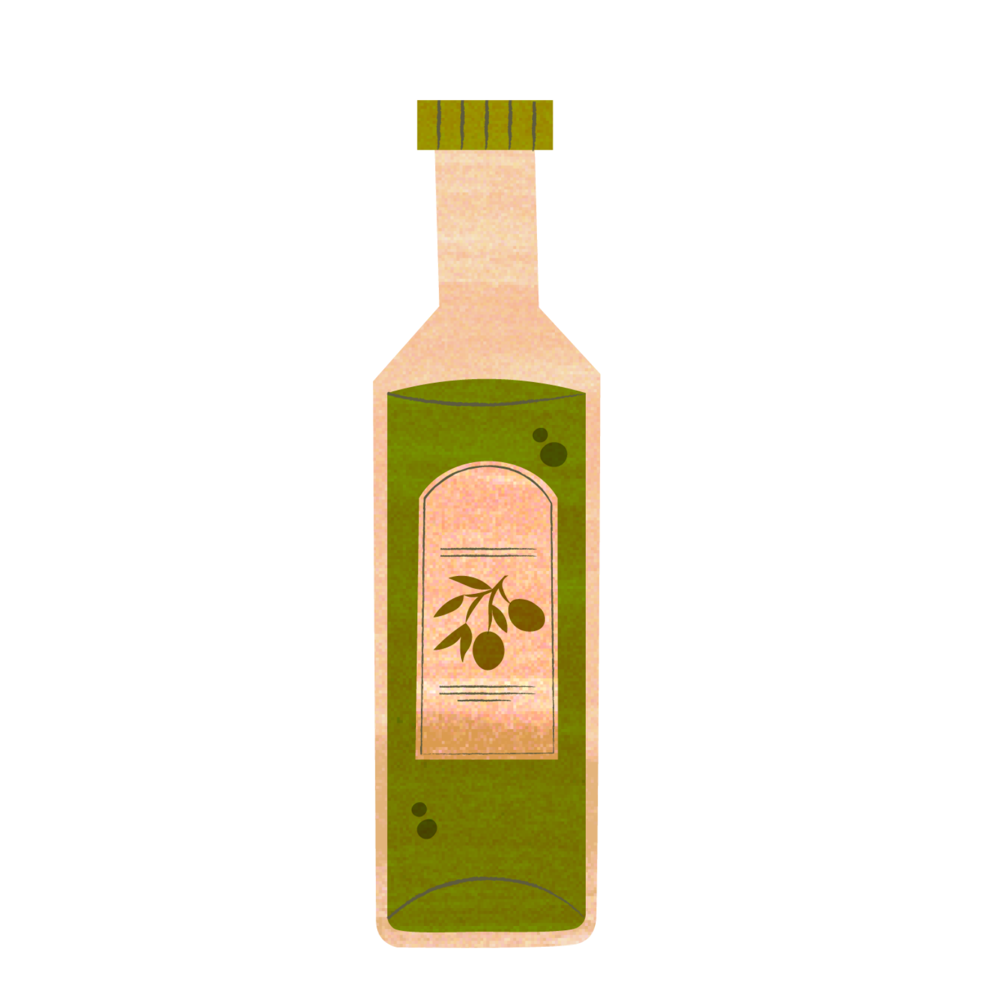
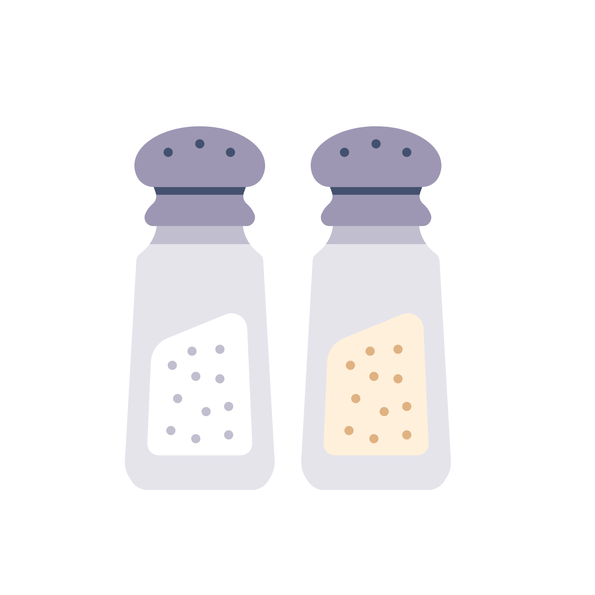
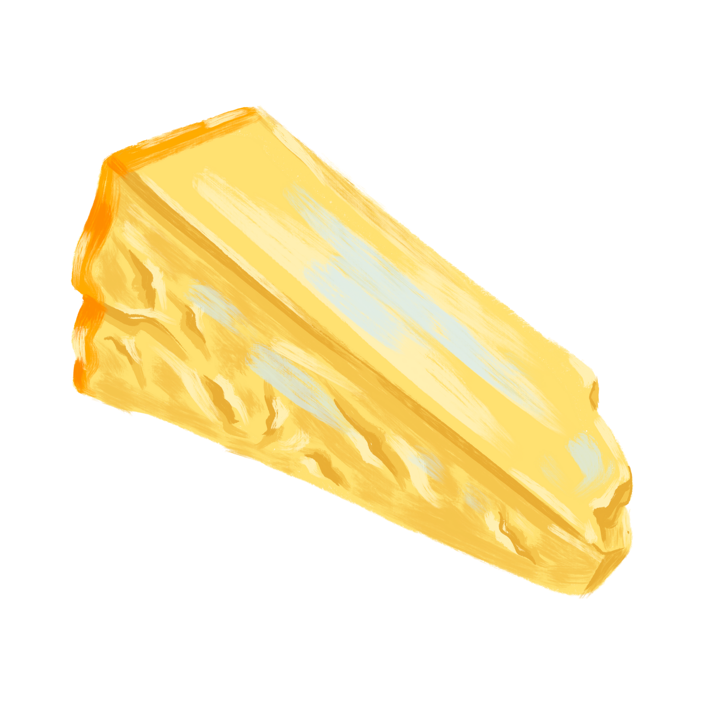

- Aglio-E-Olio is a tasty and easy recipe.
- First boil the spaghetti in a pot of lightly salted water.
- Put garlic and olive oil in a pan on medium heat and roast
the garlic until it's brown. - Now add your boiled spaghetti into the pan with salt,
pepper and chilli powder to taste. - Mix it all together and add parsley and cheese to it. Stir until combined
- Serve the hot delicious pasta with the remaining cheese.
Spaghetti
Garlic

Olive Oil
Salt and Pepper
Chilli
Parsley
Parmesan Cheese
